目录 (Table of Contents)
[TOCM]
[TOC]
本文简介：
tips:
node: v20+
最终代码在 main 分支
运行 ast demo：
pnpm i
pnpm build:ast
运行 playground demo：
pnpm i
pnpm dev:play
假设项目中出现以下代码：
function validEmail(value: string) {
const Email_Regex =
/^[a-zA-Z0-9.!#$%&'*+\/=?^_`{|}~-]+@[a-zA-Z0-9](?:[a-zA-Z0-9-]{0,61}[a-zA-Z0-9])?(?:\.[a-zA-Z0-9](?:[a-zA-Z0-9-]{0,61}[a-zA-Z0-9])?)*$/;
return Email_Regex.test(value) ? "" : "请输入正确的email";
}
validEmail();
email 正则是固定的，不应该写在方法里，不然每次 validEmail() 都会声明一个同样的正则。
此时可通过编写 babel 插件优化项目中的类似代码，
把函数内的 Email_Regex 提到文件最外层，并且换一个不会冲突的变量名(_Email_Regex)，把用到 Email_Regex 的地方换成_Email_Regex，
优化后的代码大概像这样：
const _Email_Regex =
/^[a-zA-Z0-9.!#$%&'*+\/=?^_`{|}~-]+@[a-zA-Z0-9](?:[a-zA-Z0-9-]{0,61}[a-zA-Z0-9])?(?:\.[a-zA-Z0-9](?:[a-zA-Z0-9-]{0,61}[a-zA-Z0-9])?)*$/;
function validEmail(value: string) {
return _Email_Regex.test(value) ? "" : "请输入正确的email";
}
validEmail();
这是各种 ast 库的 playground，
当然每个具体的 ast 库也可能有自己专门的 playground，比如 typescript;
操作 ast 树相关方法的文档
这是判断和操作各种语句、节点的工具库。
import "./style.css";
const form = document.getElementsByName("form")[0];
if (form) {
form.addEventListener("submit", (event) => {
event.preventDefault();
const emailInput = form["email"];
const emailErrMsg = validEmail(emailInput.value);
if (emailErrMsg) {
alert(emailErrMsg);
} else {
form.submit();
}
});
}
function validEmail(value: string) {
const Email_Regex =
/^[a-zA-Z0-9.!#$%&'*+\/=?^_`{|}~-]+@[a-zA-Z0-9](?:[a-zA-Z0-9-]{0,61}[a-zA-Z0-9])?(?:\.[a-zA-Z0-9](?:[a-zA-Z0-9-]{0,61}[a-zA-Z0-9])?)*$/;
return Email_Regex.test(value) ? "" : "请输入正确的email";
}
此时右边应该会报错：
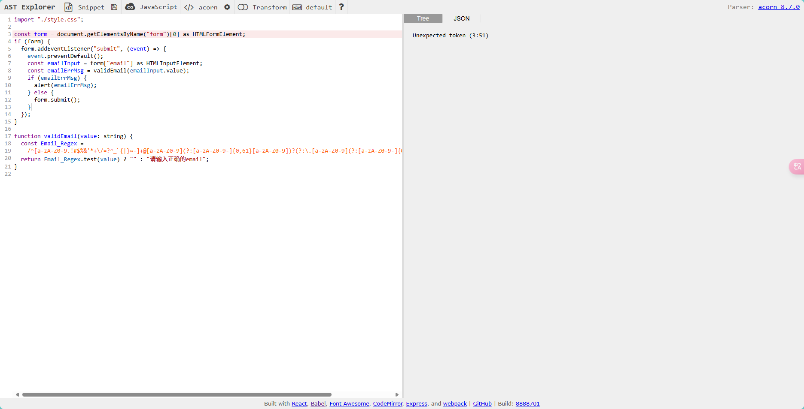
因为刚才贴的是 ts 代码，而默认配置只识别 js 代码。
首先选择和配置编译库，babel 用的是 babel-parser:

这样就能正确将 ts 代码转成语法树(ast):

打开 transform 并选择 babel v7:

左下角就是 babel 插件的基本格式。
babel parser 会对右边的 ast 深度遍历，
这里只需要关心所有的 regexp 字面量即可，
将用鼠标点击正则表达式的值，右边就会自动定位到对应的节点类型：

此时可在左下角的 visitor 对象中，实现 RegExpLiteral 方法并打印 path.node：
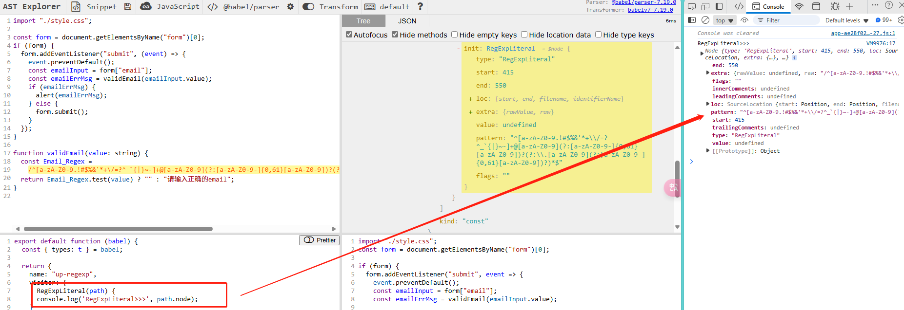
确定选到了目标节点。
打印 path.parent.id 能拿到旧的变量名(Email_Regex)

基于旧名字生成一个唯一的新变量名
const oldName = path.parent.id.name;
const newIdentifier = path.scope.generateUidIdentifierBasedOnNode(
path.parent.id
).name;
console.log("RegExpLiteral>>>", newIdentifier); // _Email_Regex
generateUidIdentifierBasedOnNode 方法能保证生成的变量名不会和当前文件其它变量名冲突。
/*
这会将函数内Email_Regex替换成_Email_Regex，
path.scope指当前正则所处的函数内部
*/
path.scope.rename(oldName, newIdentifier);
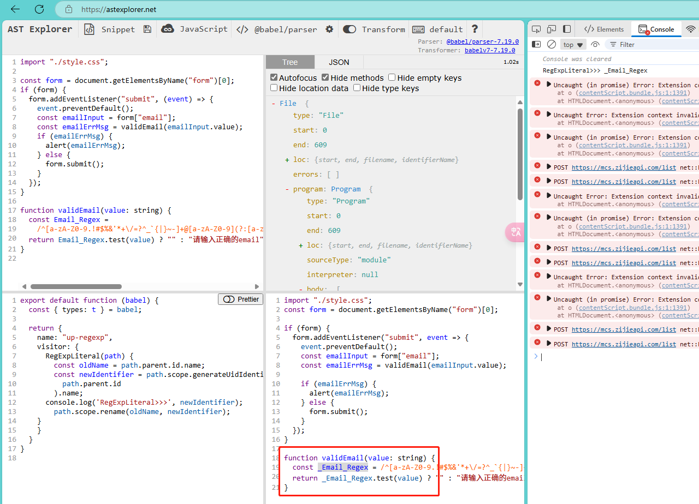
/**
* path.parentPath值正则值所处的整条声明语句，也就是
* const Email_Regex = xxx;
*/
path.parentPath.remove();
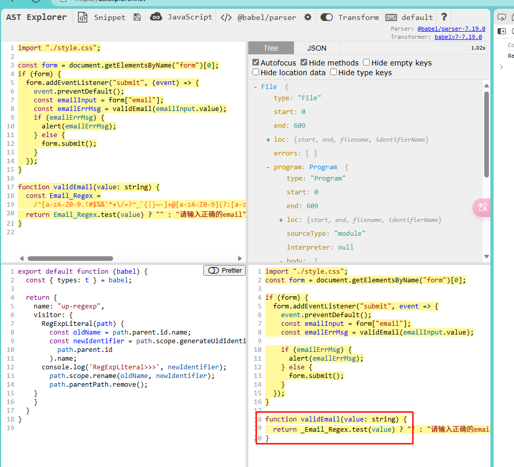
const newDeclaration = t.variableDeclaration("const", [
t.variableDeclarator(
t.identifier(newIdentifier),
t.regExpLiteral(path.parent.init.pattern)
),
]);
// 相当于新生成了 const _Email_Regex = xxx;
console.log("newDeclaration >>>", newDeclaration);
这里解释下 babel types 文档如何查看
t.variableDeclaration 文档如下：
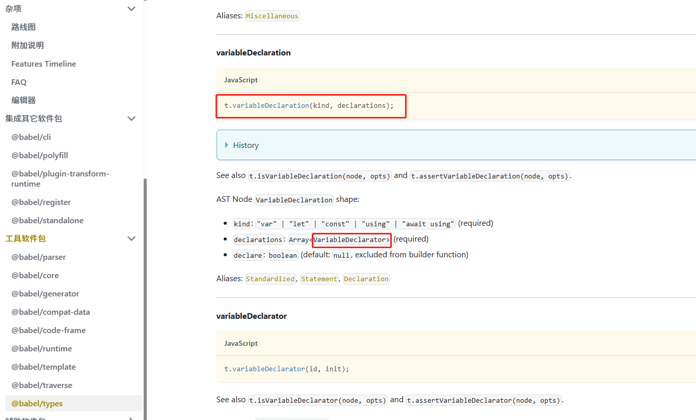
declarations 参数是一个 VariableDeclarator[], 再看 VariableDeclarator 的文档：
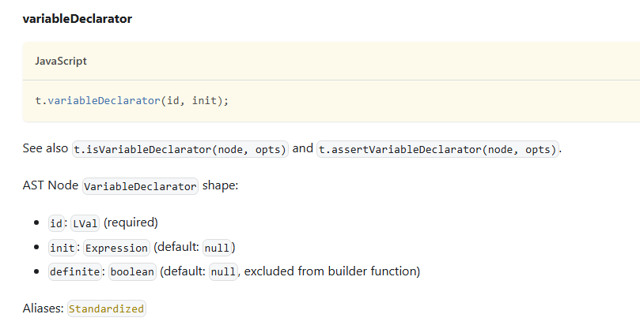
VariableDeclarator 接收 id 和 init, id 是 LVal 类型，init 是个 Expression。
LVal 类型有以下几种：
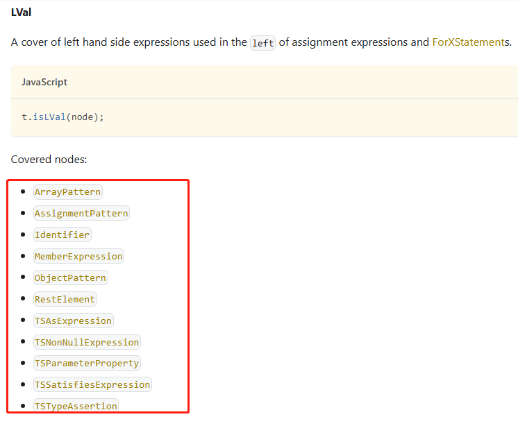
而 "const" 属于 Identifier, 所以 VariableDeclarator 的第一个参数就是 t.identifier(newIdentifier)；
Expression 类型 参考：https://www.babeljs.cn/docs/babel-types#expression
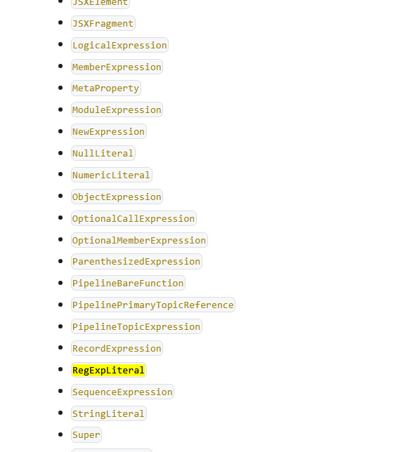
正则表达式属于 regExpLiteral：

所以 VariableDeclarator 的第二个参数就是 t.regExpLiteral(path.parent.init.pattern)；
const program = path.findParent(t.isProgram);
program.node.body.unshift(newDeclaration);
这就是提升正则最基本的实现：

再加个复杂点的场景试下：
function validNumber(value: string) {
const run = () => {
const Number_Regex = /^\d+$/;
console.log(Number_Regex);
return Number_Regex;
};
return run().test(value) ? "" : "请输入数字";
}
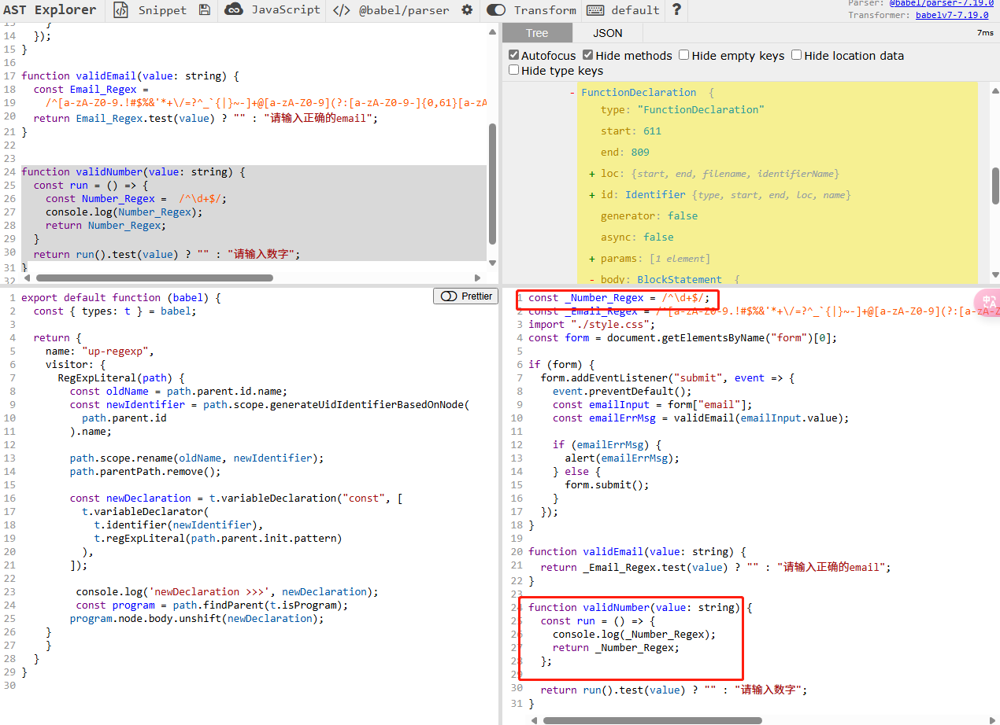
这样在线的 up-regexp.js 就写好了。
新建了 ast 目录并将源码复制到 main.ts

下面安装 babel，用它把 main.ts 编译成 main.js
npm add @babel/cli @babel/core @babel/preset-env @babel/preset-typescript -D
新建 babel.config.json:
{
"presets": [
[
"@babel/preset-env",
{
"targets": {
"edge": "17",
"firefox": "60",
"chrome": "67",
"safari": "11.1"
},
"useBuiltIns": "usage",
"corejs": "3.6.5"
}
],
["@babel/preset-typescript"]
]
}
presets 是从后往前执行的，所以"@babel/preset-typescript"放最后。
增加一个 script:
{
"build": "babel ./src/main.ts --out-file dist/main.js"
}
此时 npm run build 应该能把 main.ts 转成 main.js
如果跑 demo 代码请在根目录下 pnpm build:ast 代替

编译后的 js 语法版本取决于 tsconfig.json 中的 target, demo 是 es2020.
此时还只是 ts => js，正则也是原样输出，现在把在线的 up-regexp.js 复制过来，并修改 babel.config.json:
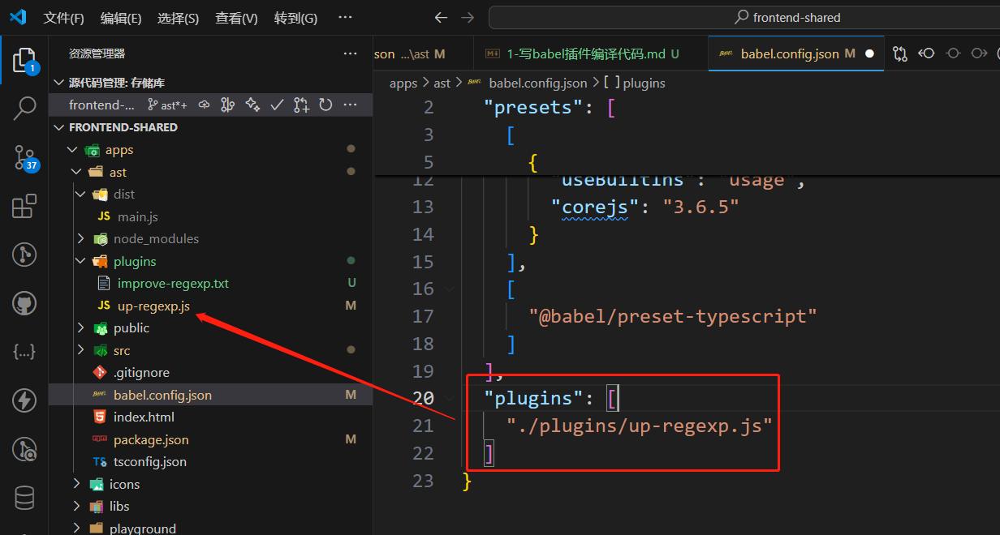
up-regexp.js 的内容和在线的一样，不用修改。
然后再 run build 一下，效果和在线的一样：

到此 up-regexp.js 就完成了。
目前只有用于 css 文件的 px2rem, 但 js, html 中想要实现也是可以的，
虽然使用场景不多，但可作为练习 ast 的例子，写完后把它用于一个 vite + tsx 的项目中。
和之前方法一样，我这直接给出最终的代码：
const normalPxReg = /(\d+(\.\d+)?)px/g;
const blendPxReg = /(\w+)px/g;
let options = { remUnit: 16, remPrecision: 8 };
const varMap = new Map();
export default ({ types }, opts, rootPath) => {
// console.log('rootPath>>>', rootPath); 根目录
Object.assign(options, opts);
return {
visitor: {
VariableDeclarator(path) {
const { id, init } = path.node;
const validValue =
init && init.value && !isNaN(+init.value)
? init.value.toString()
: null;
if (validValue) {
varMap.set(id.name, validValue);
}
},
StringLiteral(path) {
const { value } = path.node;
if (normalPxReg.test(value)) {
const strNode = types.stringLiteral(calcValue(value));
path.replaceWith(strNode);
}
},
TemplateLiteral(path) {
// const tplContent = `${path.node.quasis[0].value.raw}${path.node.expressions[0].name}${path.node.quasis[1].value.raw}`
let tplContent = "";
path.node.quasis.forEach((qua, index) => {
const targetExpression = path.node.expressions[index];
tplContent +=
qua.value.raw + (targetExpression ? targetExpression.name : "");
});
// console.log('tplContent>>>', tplContent);
const newTplContent = tplContent.replace(blendPxReg, (matchStr, g1) => {
// console.log('matchStr', matchStr, g1, +g1);
if (g1) {
if (isNaN(+g1)) {
const value = varMap.get(g1);
// console.log('value>>>', value);
if (value || value === 0) {
return calcValue(value + "px");
}
} else {
return calcValue(matchStr);
}
}
return matchStr;
});
// console.log('newTplContent>>>', newTplContent);
const strNode = types.stringLiteral(newTplContent);
path.replaceWith(strNode);
},
},
};
};
function calcValue(value) {
const { remUnit, remPrecision } = options;
return value.replace(normalPxReg, (_, $1) => {
let val = (+$1 / remUnit).toFixed(remPrecision);
return val + "rem";
});
}
可以看到源码中的 px 都转成了 rem:

下面用于 vite+tsx 的 demo 中， 根目录下运行： pnpm dev:play, 打开浏览器,
默认情况如下：

box 源码如下：
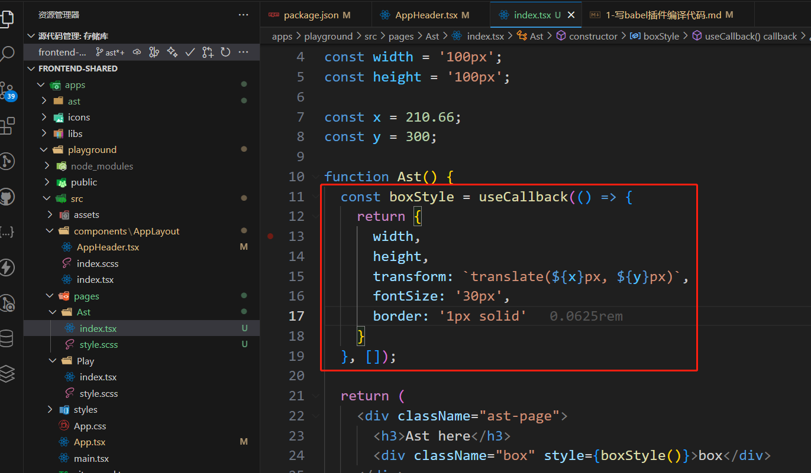
由于最新的 vite 已经不用 babel 了，所以默认不会读取 babel.config.json,
但 playground 这个 demo 用了"@vitejs/plugin-react", 这个插件能配置 babel:
vite.congig.ts:
import { defineConfig } from "vite";
import react from "@vitejs/plugin-react";
export default defineConfig({
plugins: [
react({
babel: {
plugins: [
[
"./plugins/px2rem.js",
{
remUnit: 75,
remPrecision: 5,
},
],
],
},
}),
],
});
然后新建 /plugins/px2rem.js 把刚才的代码复制过来， 重新 pnpm dev:playground, 效果如下：

上面两个例子都改写了源码的输出，这很容易导致源码和浏览器运行时效果不一致，如 tsx 里的 px2rem,
不熟悉代码的人一时之间根本找不到 px => rem 的源头在哪，而且这个需求在 js/ts 中远没有 css 那么重要，
如果真正有这个需求，建议还是封装一个 px2rem 的工具方法更好。